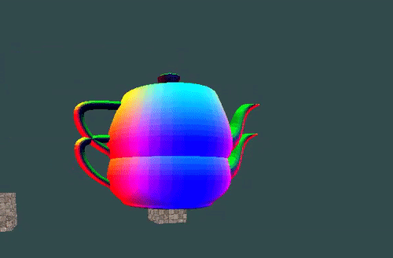

Where am I ?
Hi! You landed on my Portfolio Website. My name is Raphael and if that name already intrigues you, you can find out more about myself by just reading on!
At a Glance
My full Name is Raphael Sebastian Baier. I'm from Austria, which naturally means I speak German and as you can see English. I'm currently studying Creative Media and Game Technologies at the Saxion Univesity of Applied Sciences in the Netherlands. Before that I was a student at the Werkschulheim Felbertal where I got my Degree in Mechatronics (more about this here) and received the AHS Matura (educ. Higher School Certificate).
You can contact me per email at: public.baier.raphael@gmail.com
or via Linkedin
Public Repositories and other Work
Raphael's (@algo-ryth-mix) Public Repos
Adventures into Obj Files
Anyone who worked with 3D models probably knows the .obj extension. it is a ubiquitous file-type that almost any 3d Program supports.
Support for it in LibPixlEngine is therefore important. But just as with other "ubiquitous" things, this does not neccessarly mean it is good.
I really disklike the structure of how obj files work. Luckily tinyobj can do that work for me.
Working with the structure is still a pain as there is still some extra work required to get it to render, but overall the experience went pretty smooth.
I would say the next step is probably materials. (maybe). Normals just ain't cutting it. Here is a small gif of the good old teapot.
(note that there are indeed 2 teapots, this is not a graphical glitch, just bad spacing)

Lua Integration on LibPixlEngine
Working with LibPixlEngine, although I naturally get a bit blind for my pet-project, can get quite tedious. depending on how much code you have changed,
how much of the library you are using and how powerful your rig is, compile times can easily surpass multiple minutes.
Which, for a language like c++ where nullptrs are a thing, can get old really quick.
The approach most Engines choose is therefore to include some kind of scripting environment.
Now in LibPixlEngine this is inherently difficult because of multiple things:
- LPE is highly multithreaded. a script-environment that cannot handle that is clearly out of place.
- LPE has the concept of task priorities, a script can't simply have an onEarlyUpdate() and onLateUpdate() method
- LPE has variable frame and tick-rates, it is of upmost importance that the Script receives a DeltaTime in some way or another
- and last but not least, LPE is ECS-based meaning you could attach a script (no matter how much sense that may make) to literally everything
All of these things made the choice for a Scripting language really difficult, but in the end I decided to not go with my usual suspect(LUA),
but go with the next best thing.
LUA-JIT!!
You might think that isn't particularly different, and you would be right, but luajit offers much better performance on raw scripts as it, as the name suggests,
compiles the lua just in time. This is great as it allows me to write modules directly in lua without that big of a performance hit. Lua has a few other advantages as well
namely: It is well-established, it runs in a very minimal VM, that does not care from which thread it is being accessed and it can be instatiated multiple times.
Here is a script that shows (almost) all of the features that the Engine currently supports via the Engine.
As you can see the Script has full control of the underlying Component, it can also query things like the parent and the children,
and interact with some basic components of the engine itself, as well as construct some mathematical constructs.
Vectorized Libpixlengine Math Module
Recently I have been working on an improvement for the Math Module of LibPixlEngine, I decided to dwell into the scary world of SSE and AVX
once more and finally tried to improve matrix performance. For this purpose, I decided to also finally improve the unit-test framework of
lpe.unit-tests, I think I came up with an implementation that I like, that is still somewhat understandable. Take a look for yourself!
Now although this doesn't look like it improved the time complexity much, it is on average 10x faster, on a testbed with 100 4x4 matrix multiplications,
the unoptimized approach takes on average ~1ms whilst the optimized one takes roughly ~0.1ms
Now keep in mind that this takes advantage of some extensions that not all processors support, therefore we have to provide a fallback.
luckily pixl.isa.InstructionSet already has the functionality to test for SSE:
Code Examples
In more Detail
In more Detail
It all started at the 17th of April 1999 ... or so I'm told as I don't have perfect recall of that moment. The first few years where mostly boring.
But suddenly! primary school.
It turns out I was the quiet kid from day 0, dreaming of becoming an Inventor or alternatively a Train-Driver.
But sadly my school was not that suitable for the quiet kid (as in not quiet enough).
So after a year or so my Parents decided to get me into another Primary School in Leopoldskron Moos, a Region by Salzburg in Austria.
The Time there was mostly a blast, except for the occasional Test in German, which I not only hated because of my terrible Handwriting, but also because German is a Language made by an alien lunatic.
After some fiddeling with the pencile and a bit of kick-start in the german department I got all of this figured out however (or mostly at least).
I had a few, but good friends and although we were a weird bunch, we didn't get into too much trouble.
Tears and Sadness
You remember from before, when I told you that I wanted to become an inventor? It turns out the real live equivalent of that is a mechatronics engineer. This Idea of becoming a professsional in the mechatronics field was set in my head like nothing else. (and I can be stuborn) The only problem was, the only school (at that time at least) that does mechatronics at the level I was interested in was the Werkschulheim Felbertal. A private boarding-school, ontop of a mountain, in the middle of nowhere. To add insult to injury it also takes 9 instead of the usual 8 years. As you can imagine my parents weren't to keen on that idea. They had a masterplan however; The admission at the WSH works as such: you come around for a week do a bunch of tests and if you succeed you get stuffed into a class with 40 other class-mates of which after the 1st year only 20 or so remain. Out of the 120 or so applicants for each year a mear 15 usually graduate after 9 years. Well well well... not only did I get accepted our class also graduated with 21 people, a few wrong assumptions were made here. My first 5 years were mostly calm. We had strong winters and hot summers. I also discovered that I can't ski for nothing. I picked up my first book on programming with 12: "Python for beginners". And a year after that I wanted to work in C++ for whatever reason, that was a daunting task to say the least.
The time has come to choose my profession. the WSH had 3 Options: Engineering, Mechatronics and Carpenting. I was of course predetermined, but I also discovered that im an absolute idiot when it comes to working with wood. so the decision was extra easy. Mechatronics it was. Soldering is fun. Calculating Resistors not so much, Designing in CAD doing some Machining is neat, but programming... that was where I excelled above all (except for one. Instead of making him my arch-enemy however, he became one of my best friends!). I discovered that making a hunk of silicone whatever I told it to was indeed such a thrilling experience to me that I immediately specialized in that.
Nine Years have passed
I graduated with an AHS Matura and as Geselle in Mechatronics (soon to be Meister!),
Wrote a halfway decent paper on the Encryption of the Enigma Machine,
Crashed my first car,
Moved a total of 3 Times with my parents already (including to my school),
made lots of friends and
lost a few.
Now what ?
After a bit of contemplation I started my study at Saxion (moving again, twice!)
My Parents are still not impressed that I keep disappearing.
The first year is now nearly over... and im working on stuff that I don't really see the use of (Portfolios and whatnot) and stuff that I quite enjoy.
I hope this little excerpt from my life gives you a bit on insight into my person. if you figured out what type of Person I am... would you so kindly send me an email, because I am still trying to figure that out on my own.